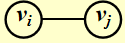
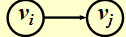
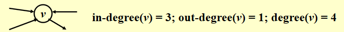
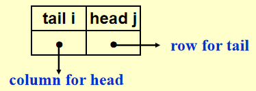
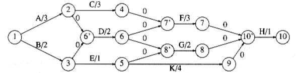
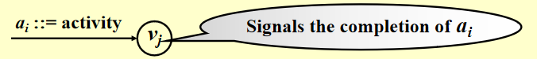
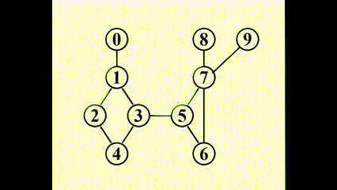
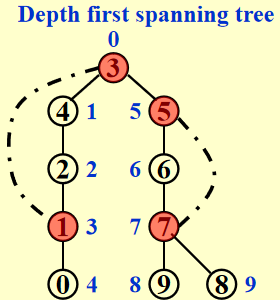

Chap 9 Graph Algorithm⚓︎
约 6991 个字 493 行代码 预计阅读时间 41 分钟
核心知识
- 图的定义、性质、表示法
- 拓扑排序（AOV网）
- 最短路问题
- 无权
- 带正边权：Dijkstra 算法
- 有负边权
- AOE网
- 网络流
- 解题：流量图、残量图
- 最小生成树(MST)
- Prim算法
- Kruskal算法
- 深度优先搜索(DFS)
- 基本算法
- 关节点（割点）、双连通分量
- 欧拉路、欧拉环
详细的图论知识见离散数学同名章节
Definitions⚓︎
- G(V, E)：\(G\) 表示图(graph)，\(V = V(G)\) 表示关于顶点(vertices)的有限非空集合，\(E = E(G)\) 表示关于边(edges/arcs)的有限集合
- 无向图(undirected graph)：\((v_i, v_j) = (v_j, v_i)\) 表示相同的边
- 有向图(directed graph, digraph)：\(<v_i, v_j> \ne <v_j, v_i>\)
\(<v_i, v_j>\)
限制
-
自环(self loop)是非法的

-
不考虑多重图(multigraph)（两个节点间有多条边）的情况

-
完全图(complete graph)：图上任意两点间都有一条边
-
无向图：\(V = n \quad E = C^2_n = \frac{n(n - 1)}{2}\)

-
有向图：\(V = n \quad E = P^2_n = n(n - 1)\)

-
-
邻接(adjacent)
-
无向图：如果\((v_i, v_j)\)存在，则称\(v_i, v_j\)是邻接的
 -
有向图：如果\(<v_i, v_j>\)存在，则称\(v_i\) to \(v_j\)是邻接的，或者说\(v_j\) from \(v_i\)是邻接的

-
-
子图(subgraph) \(G' \subset G\)，\(V(G') \subseteq V(G)\) 且 \(E(G') \subseteq E(G)\)
- 从\(v_p\)到\(v_q\)的路径(path)(\(\subset G\))：\(\{v_p, v_{i1}, v_{i2}, \dots, v_{in}, v_q\}\)，满足 \((v_p, v_{i1}), (v_{i1}, v_{i2}), \dots, (v_{in}, v_q)\) 或者 \(<v_p, v_{i1}>, <v_{i1}, v_{i2}>, \dots, <v_{in}, v_q> \subset E(G)\)
- 路径的长度(length)：路径上边的条数
- 简单路径(simple path)：对于上述路径，\(v_{i1}, v_{i2}, \dots, v_{in}\) 是不同的(不会多次经过同一顶点)
- 环(cycle)：对于一条简单路径，起点与终点相同，即 \(v_p = v_q\)
-
连通(connected)
-
无向图：
- 对于两个顶点 \(v_i, v_j\) 而言，如果它们之间存在一条路径，则称它们是连通的
- 对于整张无向图 \(G\) 而言，如果图内任意两点之间相互连通，则称整张图是连通的
对于 \(n\) 个顶点的无向图，最少需要 \(n - 1\) 条边来实现整张图的连通
- 无向图 \(G\) 的（连通）分量(component)：极大连通子图（一张图中可能有多个连通分量）
- 树是连通且无环(acyclic)的图
-
有向图：
- 有向无环图(directed acyclic graph, DAG)
- 强连通(strongly connected)有向图 \(G\)：对于 \(V(G)\) 中的每对顶点 \(v_i, v_j\)，存在从 \(v_i\) 到 \(v_j\) 以及从 \(v_j\) 到 \(v_i\) 的有向路径
-
弱连通(weakly connected)有向图：在不考虑方向的情况下（即无向图），整张图是连通的（即对于 \(V(G)\) 中的每对顶点 \(v_i, v_j\)，存在从 \(v_i\) 到 \(v_j\)** 或 **从 \(v_j\) 到 \(v_i\) 的有向路径）
对于 \(n\) 个顶点的弱连通有向图，最少需要 \(n - 1\) 条边来实现整张图的连通
-
强连通分量(strongly connected component)：极大强连通子图
- 弱连通分量(weakly connected component)：极大弱连通子图
-
-
度(degree)：\(\mathrm{degree}(v)\)，与顶点v相连的边数
对于一个有向图 \(G\) 而言，度分为入度(in-degree)和出度(out-degree)，例如：
假如 \(G\) 有 \(v\) 个顶点和 \(e\) 条边，那么 \(e = \dfrac{\sum\limits_{i = 0}^{n - 1}d_i}{2}\)，其中 \(d_i = \text{degree}(v_i)\)（握手定理）
对于有向图而言，所有顶点入度之和 = 所有顶点出度之和
Representation of Graph⚓︎
法一：邻接矩阵(adjacency matrix)
对于一张具有 \(n(n \ge 1)\) 个节点的图 \(G(V, E)\)，定义邻接矩阵 \(adj\_mat [i] [j]\)为
所以也就有：
不难看出，如果\(G\)是无向的，则该邻接矩阵是对称的，因此浪费了一半的空间和时间（复杂度：\(\Theta(|V|^2)\)），但是用在稠密(dense)图（\(|E| = \Theta(|V|^2)\)）中是比较合适的。
改进措施：通过将下三角矩阵存入一维数组中，节省了一半的空间
\(adj\_mat[n(n+1)/2] = \{a_{11}, a_{21}, \dots, a_{n1}, \dots, a_{nn}\}\)，其中 \(a_{ij}\) 的索引为 \(\dfrac{i(i-1)}{2} + j\)
法二：邻接表(adjacency lists)
例子
如何存储这张图？
注：节点的顺序并不重要
对于无向图 \(G\)，邻接表的空间 \(S = n\) 个头 + \(2e\)个节点 = \((n + 2e)\)个指针 + \(2e\)个整型
时间复杂度 \(T = E(G) = O(|V| + |E|)\)，适用于稀疏(sparse)图(\(|E| < \Theta(|V|^2)\))中
注：事实上，邻接表可以胜任各种图的存储
如何计算某个顶点的度
Degree(i) = graph[i]中节点的个数
我们需要找到in-degree(i)
-
法 1：“逆转”邻接链表

-
法 2：用多链表(multilist)表示邻接矩阵\(adj\_mat[i][j]\)

众所周知，多链表实现相当复杂，因此更推荐法 1
补充
有时顶点的值不一定是整数，也有可能是字符串，这时需要维护一张从字符串映射到整数索引的表格，在图中用索引代替字符串
法三：邻接多重表(adjacency multilist)
注：这个不作要求，了解即可
在之前的邻接表里，对于每条边 \((v_i, v_j)\)，我们会有两个节点：

通过改进，将这两个节点结合到一起：

于是就有如下表示方法（mark 表示某一条边）：
最终效果：
观察发现，在没有考虑 mark 存储的情况下，这种表示法的占用空间与邻接表完全一样。虽然它的空间复杂度略微高了点，但是在某些情况下（比如检验某条边后还要检验下一条边）比较有利。
有时，我们会遇到带权边(weighted edges)的情况，处理方式如下：
- 邻接矩阵：\(adj\_mat[i][j] = \text{weight}\)
- 邻接表/邻接多重表：为每个节点添加权重的字段
Topological Sort⚓︎
AOV网(activity on vertex network)：对于有向图 \(G\)，\(V(G)\) 表示活动，\(E(G)\) 表示位次关系
 （C1 是 C3 的前置活动）
（C1 是 C3 的前置活动）

- 如果从 \(i\) 到 \(j\) 有一条路径，则称 \(i\) 是 \(j\) 的前任(predecessor)
- 如果 \(<i, j> \in E(G)\)，则称 \(i\) 是 \(j\) 的直接前任(immediate predecessor)。称 \(j\) 是 \(i\) 的 （直接）后任((immediate) successor)
可行的AOV网必须是一个有向无环图(DAG)
补充阅读：AOE网
偏序(partial order)是一种具有以下性质的关系
- 反自反性(irreflexive)（不存在 \(i \rightarrow i\)）
- 反对称性(anti-symmetric)（\((i \rightarrow j) \wedge (j \rightarrow i) \Rightarrow i = j\)）
- 传递性（\(i \rightarrow j, j \rightarrow k \Rightarrow i \rightarrow k\)）
说明
- 这里的偏序指的是严格偏序，因此和离散数学定义的偏序略有区别
- 如果具有自反性，就会出现要做一件事 \(i\) 之前要完成 \(i\) 的怪圈，因此❌
拓扑序(topological order)是一张图的顶点的线性顺序，满足：对于任意两个顶点 \(i, j\)，如果 \(i\) 是 \(j\) 的前任，则在线性顺序中 \(i\) 要出现在 \(j\) 之前
注：
- 拓扑序不一定是唯一的
- 如果拓扑序中一个顶点出现在另一个顶点的前面，它们之间不一定存在路径
- 可以用拓扑序检验有向图是否存在环
代码实现
// version 1
void Topsort(Graph G)
{
int Counter;
Vertex V, W;
for (Counter = 0; Counter < NumVertex; Counter++)
{
V = FindNewVertexOfDegreeZero(); // O(|V|)
if (V == NotAVertex)
{
Error("Graph has a cycle");
break;
}
TopNum[V] = Counter; // or output V
for (each W adjacent from V)
indegreep[W]--;
}
}
FindNewVertexOfDegreeZero()：扫描Indegree[]数组，找到入度为 0 且未赋予拓扑序的顶点，如果没有找到顶点，那么表明图中出现了环- 每处理完一个顶点 V 后，就需要让从 V 出发与 V 邻接的顶点的入度 -1，相当于在图上移除了顶点 V 以及它的所有出边
- 时间复杂度：\(T = O(|V|^2)\) 👎
改进方法：将所有未赋予拓扑序的、度为 0 的顶点放入特殊的盒子（比如队列或*栈）里
动画演示

代码实现
// version 2, using queue ADT
void Topsort(Graph G)
{
Queue Q;
int Counter = 0;
Vertex V, W;
Q = CreateQueue(NumVertex);
for (each vertex V)
if (indegree[V] == 0)
Enqueue(V, Q);
while (!isEmpty(Q))
{
V = Dequeue(Q);
TopNum[V] = ++Counter; // assign next
for (each W adjacent from V)
if (--indegree[W] == 0)
Enqueue(W, Q);
} // end-while
if (Counter != NumVertex)
Error("Graph has a cycle")
DisposeQueue(Q); // free memery
}
时间复杂度：\(O(|E| + |V|)\)
例题

Shortest Path Algorithms⚓︎
给定一张有向图 \(G(V, E)\)，以及成本函数 \(c(e)\)，\(e \in E(G)\)，从源(source)到目的地(destination)的路径 \(P\) 的长度(length)为 \(\sum\limits_{e_i \subset P}c(e_i)\)（也称为带权路径长度(weighted path length)）
Single-Source Shortest-Path Problem⚓︎
问题
给定一张权重图 \(G(V, E)\)，以及一个可区分的顶点 \(s\)，寻找从 \(s\) 到 \(G\) 中所有其他顶点的最短权重路径
：
- 右图存在负的边，这样最短路的长度可以是无穷小。因此在这种情况下，最短路是未定义的，因为陷入了死循环。这种循环被称为负值环(negative-cost cycle)
- 从 \(s\) 到 \(s\) 的最短路径被定义为 0
- 现在，还没有一种最短路算法的速度快于找到从 \(s\) 到所有顶点的路径的算法
Unweighted Shortest Paths⚓︎
在这种情况下，所有边的权重 = 1

如图所示，为了找到从 \(v_3\) 出发到其他顶点的所有最短路径：
- 先找到与 \(v_3\) 邻接的顶点，记从 \(v_3\) 到这些顶点的最短路径为 1
- 然后再从这些顶点出发，找到与它们邻接的顶点。如果新找到的顶点还没有相应的最短路径，那就记这些顶点的最短路径为 2
- 重复步骤 2，直至所有顶点的最短路径都已找到
这种方法被称为宽度优先搜索(breadth-first search, BFS)：该方法一层层地处理顶点：最近的顶点最先处理，最远的顶点最后处理。这和树中的层序遍历类似
实现
-
Table[i].Dist::= 从\(s\)到\(v_i\)的距离 \(= \begin{cases}\infty & \text{if } v_i \ne s \\ 0 & \text{if } v_i = s\end{cases}\) -
Table[i].Known::= \(\begin{cases}1 \quad \text{if } v_i \text{ is checked} \\ 0 \quad \text{if not}\end{cases}\)
- 其实没有必要设这个字段(因为
Table[i].Dist同时具备标记功能)，写在这里只是提醒一下要做一下标记- 在初始化中，所有顶点的
Table[i].Known = 0，包括起始顶点，因为没有任何顶点被处理过
Table[i].Path::= 记录路径上 \(v_i\) 的前一个顶点，以便打印整条路径
代码实现
// version 1
void Unweighted(Table T)
{
int CurrDist;
Vertex V, W;
for(CurrDist = 0; CurrDist < NumVertex; CurrDist++)
{
for (each vertex V)
if (!T[V].Known && T[V].Dist == CurrDist)
{
T[V].Known = true;
for (each W adjacent to V)
if (T[W].Dist == infinity)
{
T[W].Dist = CurrDist + 1;
T[W].Path = V; // (*)
}// end-if Dist == Infinity
} // end-if !Known &&Dist == CurrDist
} // end-for CurrDist
}
这个算法显然没什么效率，因为外层循环要循环 NumVertex - 1 次才结束，即使所有的顶点早就处理过了。虽然可以增加一个额外的判断提前结束循环，但这并没有影响最坏情况的运行时间，比如：

起始点为 \(v_9\)，第一次循环要找 CurrDist == 0 的顶点（即 \(v_9\)）。我们一般会按照节点下标的递增顺序查找，则要找到 \(v_9\) 需要从头遍历到尾；而且不难看出，每次循环均会从头遍历到尾（越来越靠前）
时间复杂度 \(T = O(|V|^2)\)👎
可以发现，如果顶点 \(V\) 未被标记，但 \(d_v \ne \infty\)，那么 \(d_v = CurrDist\) 或 \(d_v = CurrDist + 1\)，因此没有必要像上面那个算法一样扫描整个表来找到合适的顶点。
改进思路
用两个箱子，一个箱子放未标记的 \(d_v = CurrDist\) 的顶点，另一个箱子放未标记的且 \(d_v = CurrDist + 1\) 的顶点。那么，原来扫描整张表的操作可以变成：从第 1 个箱子找任一顶点 \(V\)，等到 (*) 那行代码执行完后，将 \(W\) 放入第 2 个箱子。等到外层 for 循环一轮结束后，第 1 个箱子为空，将第 2 个箱子的顶点转移到第 1 个箱子，进行下一轮循环。
事实上，我们只需要一个队列就能完成上述改进思路：
这里不用
Known字段是因为Dequeue就代表顶点已经被处理过了，不会再回到队列里
代码实现
// version 2
void Unweighted(Table T)
{
// T is initialized with the source vertex S given
Queue Q;
Vertex V, W;
Q = CreateQueue(NumVertex);
MakeEmpty(Q);
Enqueue(S, Q); // Enqueue the source vertex
while (!IsEmpty(Q))
{
V = Dequeue(Q);
T[V].Known = true; // not really necessary
for (each W adjacent to V)
if (T[W].Dist == Infinity)
{
T[W].Dist = T[V].Dist + 1;
T[W].Path = V;
Enqueue(W, Q);
} // end-if Dist == Infinity
} // end-while
DisposeQueue(Q); // free memory
}
可以看到，这和拓扑排序的算法很像
动画演示

Dijkstra's Algorithm(for weighted shortest paths)⚓︎
Dijkstra算法的思路
令 \(S =\) {\(s\) 和已找到最短路径的顶点 \(v_i\) 的集合}。对于 \(\forall u \notin S\)，定义distance[u] = 路径 \(\{s \rightarrow (v_i \in S) \rightarrow u\}\) 的最小长度
- Dijkstra 算法按阶段执行，在每个阶段中，挑选一个顶点\(v\)，保证它是所有未被标记的顶点中路径长度\(d_v\)最短的那个顶点（如果有多个最短路径长度，则任意挑选顶点）
- 对于从顶点 \(v\) 出发的邻接顶点 \(w\)，\(d_w = \min(d_w, d_v + c_{v, w})\)
- 标记顶点 \(v\)，即令 \(v \in S\)
- 然后对于剩余未被标记的顶点，重复上述操作，直至所有顶点均被标记
不难发现，这是一种贪心算法
预备工作
// Declarations for Dijkstra's algorithm
typedef int Vertex
struct TableEntry
{
List Header; // Adjacency list
int Known;
DistType Dist;
Vertex Path;
};
// Vertices are numbered from 0
#define NotAVerTex (-1)
typedef struct TableEntry Table[NumVertex];
// Initialization
void InitTable(Vertex Start, Graph G, Table T)
{
int i;
ReadGraph(G, T);
for (i = 0; i < NumVertex; i++)
{
T[i].Known = False;
T[i].Dist = Infinity;
T[i].Path = NotAVerTex;
}
T[Start].dist = 0;
}
// Print shortest path to V after Dijkstra has run
// Assume that the path exists
void PrintPath(Vertex V, Table T)
{
if(T[V].Path != NotAVertex)
{
PrintPath(T[V].Path, T);
printf(" to");
}
printf("%v", V) // %v is pseudocode
}
代码实现
void Dijkstra(Table T)
{
Vertex V, W;
for(;;) // O(|V|)
{
V = smallest unknown distance vertex;
if (V == NotAVertex)
break;
T[V].Known = true;
for (each W adjacent to V)
if (!T[W].Known)
if(T[V].Dist + Cvw < T[W].Dist) // 这步操作称为“松弛”
{
Decrease(T[W].Dist to T[V].Dist + Cvw);
T[W].Path = V;
} // end-if update W
} // end-for(;;)
} // now work for edge with negative cost
动画演示
Dijkstra 算法的运行时间取决于我们如何寻找距离最短且未被标记的顶点
方法
- 仅仅简单扫描一遍整张表来找到 \(d_v\) 最小的顶点 \(v \rightarrow O(|V|)\)；而且外层循环遍历所有顶点，因此时间复杂度为 \(O(|V|^2)\)
- 每条边最多会更新一次，时间复杂度为 \(O(|E|)\)，而且与顶点的遍历是独立的
- 因此 \(T = O(|V|^2 + |E|)\)，适用于稠密图（此时复杂度相当于线性复杂度）
将距离保存在堆里，调用 DeleteMin 来找到未标记的最小顶点，并且之后不去管它。
那么如何实现算法中的 Decrease(T[W].Dist to T[V].Dist + Cvw); 呢？
DecreaseKey() \(\rightarrow O(\log |V|)\)，因此\(T = O(|V|\log |V| + |E| \log |V|) = O(|E|\log |V|)\)，适用于稀疏图
但是，因为堆不能有效支持 Find 操作，当 \(d_i\) 的值发生改变时，它的位置需要维护和更新，用二叉堆实现起来有些麻烦。
如果用到配对堆(pairing heap)，情况就会改善，这种改进不做要求
将更新后的 \(d_w\) 插入堆中，这样的话堆内就会出现多个表示同一顶点的距离。因此在 V = smallest unknown distance vertex; 这一句中，要重复使用 DeleteMin，直到未标记的点出现（标记过的点就扔掉不用）。虽然这种方法会扩大堆的规模（\(O(|E|)\)），但是因为 \(|E| \le |V|^2\)。所以 \(\log |E| \le 2\log |V|\)，因此 \(T = O(|E| \log |V|)\)。但它占用空间大于法 1 需要 \(|E|\) 次 DeleteMin 操作，因此在实际运行中可能会变慢。
其他改进方法：斐波那契堆(Fibonacci heap)
具体实现
void Dijkstra(VType s, Table T, int n) // Finding all the shortest paths
{
VType V, W; // V: the current vertex; W: the vertex adjacent to V
Heap H; // A heap maintaining the shortest unknown vertex
Vertex cur, tmp; // cur: obtaining the information of all adjacent vertice regarding V; tmp: containing new previous vertex adjacent to W
int len, cnt = n; // len: the distance of T[V].dist + the distance between V and W; cnt: used to terminate the loop
H = InitHeap(n, s); // Initialization of the heap
while (cnt > 0)
{
V = DeleteMin(H); // Obtaining the shortest unknown vertex
T[V].Known = 1; // Marking it
cnt--;
cur = G[V]; // Getting all adjacent successors
while (cur != NULL) // Traversing all successors
{
W = cur->vertex; // The current successor
if (!T[W].Known) // If W isn't marked, then try to update it
{
len = T[V].Dist + cur->length; // New distance
if (len < T[W].Dist) // If the new distance is shorter than the previous one, then update it
{
T[W].Dist = len;
if (pos[W] == 0) // If W hasn't been in the heap, then insert it into the heap
Insert(W, len, H);
else // If W is in the heap, then update the distance of W and update the whole heap
DecreaseKey(pos[W], len, H);
T[W].Path = NULL; // Clearing out all previous vertice, because we find the new optimal one
tmp = (Vertex)malloc(sizeof(struct node)); // Insert the new one into the T[W].Path
tmp->vertex = V;
tmp->next = T[W].Path;
T[W].Path = tmp;
}
else if (len == T[W].Dist) // If the new distance is equal to the old one, then just involve the new solution
{
tmp = (Vertex)malloc(sizeof(struct node)); // The same operations
tmp->vertex = V;
tmp->next = T[W].Path;
T[W].Path = tmp;
}
}
cur = cur->next; // Finding the next one
}
}
}
Graphs with Negative Edge Costs⚓︎
如果出现负的边成本，那么我们就不能在使用Known字段标记是否已经处理过某个顶点，因为有可能在第一次处理该顶点之后，又发现更小的路径长度（因为负的边），需要重复处理某个顶点
一种尝试❌
给所有边加上一个相同的正常数，使得所有边的成本为正数
分析：这样做的话，原本包含边数较多的路径，它的成本增长就明显多于边数较少的路径，这就有可能改变最短路径的取法。
然而，若所有边的权重都乘上一个相同的正常数，这不影响最短路的结果
我们用“无权重最短路算法 + Dijkstra算法”来解决这一问题：
代码实现
void WeightedNegative(Table T)
{
Queue Q;
Vertex V, W;
Q = CreateQueue(NumVertex);
MakeEmpty(Q);
Enqueue(S, Q); // Enqueue the source vertex
while (!IsEmpty(Q)) // each vertex can dequeue at most |V| times
{
V = Dequeue(Q);
for (each W adjacent to V)
if (T[V].Dist + Cvw < T[W].Dist) // no longer once per edge
{
T[W].Dist = T[V].Dist + Cvw;
T[W].Path = V;
if (W is not already in Q)
Enqueue(W, Q);
} // end-if update
} // end-while
DisposeQueue(Q); // free memory
} // negative-cost cycle will cause indefinite loop
- 时间复杂度：\(O(|E| \cdot |V|)\)
- 如果出现负值环，该算法将会陷入无限循环。因此，记录每个顶点的出队次数，发现有顶点出队次数多于 \(|V|\) 次时，就终止程序，这样可以避免这一问题
Acyclic Graphs⚓︎
如果图是无环(acyclic)，我们可以按照拓扑序选择顶点，因为当选择某个顶点后，它的距离不可能因为它前面顶点的入边而减少，这样只需执行一趟算法即可。
时间复杂度\(T = O(|E| + |V|)\)，不需要优先队列
应用：关键路径分析(critical path analysis)
- AOV网：每个顶点表示一个活动，且包括需要完成该活动的时间。边(v, w) 表示 w 完成之前，v必须完成
-
AOE网(activity on edges networks)
表示方法：
注：必要时需要添加dummy edges和dummy nodes，避免错误或缺少的依赖关系产生
- \(EC[j]\)：节点\(v_j\) 最早的完成时间
- \(LC[j]\)：节点\(v_j\) 最晚的完成时间
🌰

注：蓝字表示EC，红字表示LC，绿字表示空闲时间（后面会讲到）
-
计算EC：找到第一个事件到最后一个事件之间最长的路
注： 图如果是有环的，因为正成本环(positive-cost cycles)的存在，这种算法无法实现。然而这里已经规定是无环图，所以无需担心
从起点 \(v_0\) 开始，对于任意的 \(a_i = <v, w>\)，我们有
\[ EC[0] = 0 \quad EC[w] = \max\limits_{(v,w) \in E} \{EC[v] + C_{v, w}\} \]按拓扑序计算
-
计算 LC：从终点 \(v_8\) 开始，对于任意的 \(a_i = <v, w>\)，我们有
\[ LC[8] = EC[8] \quad LC[v] = \min\limits_{(v,w) \in E} \{LC[v] - C_{v, w}\} \]按逆向拓扑序计算
-
\(<v, w>\) 的空闲时间(slack time) = \(LC[w] - EC[v] - C_{v, w}\)
- 关键活动(critical activity)：空闲时间为0的活动
- 关键路径(critical path)：所有边的空闲时间均为0的路径
All-pairs Shortest Path Problem⚓︎
对图中任意一对顶点 \(v_i, v_j(i \ne j)\)，要求它们的最短路径，有以下方法：
- 使用 \(|V|\) 次单源算法（比如 Dijkstra），时间复杂度 \(T = O(|V|^3)\)，在稀疏图中运行较快
- 用 Chap 10 给出的算法，时间复杂度 \(T = O(|V|^3)\)，在稠密图中运行较快，这里就略过了我也不知道是什么算法(doge)
Network Flow Problems⚓︎
考虑下面的管道网络：

- 这是一个有向图 \(G(V, E)\)，每条边的容量(capacity)为 \(c_{v, w}\)，经过该边的流量(flow)不得超过它的容量
- 我们称起点 s 为源点(source)，终点 t 为汇点(sink)
- 对于所有顶点 \(v \notin \{s, t\}\)，总流入 = 总流出，即 \(\text{Total coming in}(v) \equiv \text{Total going out}(v)\)，也就是说顶点不具备存储的能力
🎯：确定从 s 到 t 的最大流(maximum-flow)
Simple Algorithm⚓︎
注：使用这个算法时，我们需要3张图：
- 原图 \(G\)
- 流量(flow)图 \(G_f\)：表示算法运行的每个阶段中已经得到的流量，初始情况下每条边的流量均为 0
- 残量(residual)图 \(G_r\)：表示对于图中的每条边，还剩下多少流量可以被添加
步骤
- 在残量图(residual graph) \(G_r\) 中找一条 \(s \rightarrow t\) 的简单路径，该路径称为增广路径(augmenting path)
- 增广路径的流量为路径上的所有边中最小的流量，用该流量更新流量图(flow graph) \(G_f\)
- 更新 \(G_r\)，并移除流量为0的边
- 如果 \(G_r\)中还存在 \(s \rightarrow t\) 的路径，回到步骤 1，否则终止程序
动画演示

问题
如果我们采用贪心的策略，对于上图，我们会先选择\(s \rightarrow a \rightarrow d \rightarrow t\)，这样得到的流量为 3，如下图所示。然而，这样做的话我们就无法再找到第 2 条路径，因此总流量为3，不满足要求。因此我们需要改进上述算法。
Solution⚓︎
改进
让算法具备撤销(undo)决策的能力：对于流量图 \(G_f\) 中的每条边 (v, w)，它的流量为 \(f_{v, w}\)，在残量图中添加一条反向的边 (w, v)，它的流量也为 \(f_{v, w}\)
令 \(f\) 表示图 \(G = (V, E)\) 的流量，则残差图的边的权重为：
动画演示
最终效果：
注：如果边的容量是有理数，那么该算法在终止时总能得到一个最大流（图有环的话也可以）
Analysis⚓︎
前提：所有边的容量为整数
我们可以利用无权最短路径算法来找到增广路径
时间复杂度 \(T = O(f \cdot |E|)\)，\(f\)表示最大流量
但对于以下特殊情况：

如果我们随机挑选增广路径，挑到一条包括 \(a \rightarrow b\) 的路径，就会产生问题：
Random augmentations could continually augment along a path that includes the edge connected by a and b. If this were to occur repeatedly, 2,000,000 augmentations would be required, when we could get by with only 2.
解决方法
在选择增广路径时，总是挑选对流量提升最大的路径
如何实现：稍微改变一下 Dijkstra 算法
时间复杂度：
在选择增广路径时，挑选边最少的增广路径
时间复杂度：
Supplements⚓︎
- 更优的算法，时间复杂度可以将至 \(O(|E||V|\log(|V|^2/|E|))\)和\(O(|E||V| + |V|^{2 + \epsilon})\)
- 对于某些特殊情况，时间复杂度还可以降低：如果除了源点和汇点外的所有顶点的入边容量为1，或者出边容量为 1，那么最优算法的时间复杂度为 \(O(|E||V|^{\frac{1}{2}})\)
- 更复杂的问题：最小费用流问题(min-cost flow problem)——每条边不仅有容量，还要考虑单位流量的费用。🎯：要找到所有最大流量中的最小成本
Minimum Spanning Tree⚓︎
定义：图 \(G\) 的生成树(spanning tree)是一棵包含所有顶点 \(V(G)\)（但不一定包含所有边）的树
🌰：
如何理解最小生成树(minimum spanning tree)？
-
“树”：无环且边的数量为 |V| - 1
因此当图的边数 < |V| - 1时，该图不存在最小生成树
-
“最小”：保证生成树的所有边的权重和最小
- “生成”：覆盖所有的顶点
- 最小生成树存在的充要条件是图\(G\)是连通的
- 如果在生成树中添加一条边，就会形成一个环
- 最小生成树是并不一定是唯一的，但最小生成树的总权重是唯一的
如何求解？——贪心算法(greedy algorithm)，每一步都采取最优策略，但有以下限制：
- 必须使用图里面的边
- 必须用到 \(|V| - 1\) 条边
- 不能出现环
Prim's Algorithm⚓︎
方法：生成一棵树，与 Dijkstra 算法非常相似，适用于稠密图中
- 初始情况下，先将一个顶点作为树的根放入树内
- 在每个阶段，添加边(u, v)，满足 (u, v) 的权重是来自已有生成树的顶点 u 和来自生成树外的 v 之间的所有边中权重最小的那条，且不产生环，然后将新的顶点 v添加至树里
- 重复上述步骤，直至所有顶点均在生成树内
动画演示

与Dijkstra不同之处在于：
-
要保存两类值 \(d_v\) 和 \(p_v\)：
- \(d_v\)：连接 \(v\) 和已知顶点的最短路的权重
- \(p_v\)：最后一个导致 \(d_v\) 改变的顶点
-
更新规则更加简单：对于已经选入树内的顶点 \(v\)，它的邻接顶点 \(w\) 满足 \(d_w = \min(d_w, c_{w, v})\)
注：由于这是无向图，因此需要用到两张邻接表存储图
时间复杂度：
- 不用堆（适用于稠密图）：\(O(|V|^2)\)
- 二叉堆（适用于稀疏图）：\(O(E\log|V|)\)
代码实现
/*
* Function: prim
* --------------
* Find a minimum spanning tree for the given undirected
* graph by using Prim's algorithm
*
* w_adj_mat: the weighted adjacency matrix
* n: the number of vertices
*
* returns: the total edge weights of the MST
*/
int prim(int w_adj_mat[MAX][MAX], int n)
{
int dist[MAX]; // distance from vertex i to the known part
int prev[MAX]; // for tracing the edges of MST
int known[MAX]; // 1 if the vertex i is checked, 0 if not
// initialization
for (int i = 0; i < n; i++)
{
dist[i] = INFINITY;
prev[i] = -1;
known[i] = 0;
}
dist[0] = 0; // start from vertex 0
for (int k = 0; k < n; ++k)
{
// choose the vertex closest to the known part
int min_d = INFINITY;
int min_v = -1;
for (int i = 0; i < n; i++)
{
if (!known[i] && dist[i] < min_d)
{
min_d = dist[i];
min_v = i;
}
}
// relaxation of vertices adjacent to the chosen one
known[min_v] = 1;
for (int i = 0; i < n; i++)
{
if (!known[i])
{
if (w_adj_mat[min_v][i] && dist[i] > w_adj_mat[min_v][i])
{
dist[i] = w_adj_mat[min_v][i];
prev[i] = min_v;
}
}
}
}
// total edge weights
int total_w = 0;
for (int i = 1; i < n; ++i)
total_w += dist[i];
return total_w;
}
Kruskal's Algorithm⚓︎
方法：维持一片森林（一组树），适用于稀疏图中
- 初始情况下，有 \(|V|\) 棵单个节点构成的树
- 添加一条边，可以合并两棵树。当算法结束时，应当只剩下一棵树。因此，我们很自然地想到使用并查集的算法
-
挑选边（这里假设挑选边 \((u, v)\) ）时要注意的细节：
- 如果 u, v 在同一个集合内，则不能添加这条边（否则会出现环）
- 否则加入这条边，使用
Union算法将两个集合合并起来 - 用堆维护未被检验过的最小的边，每当检验一条边时，使用
DeleteMin算法
图示：

伪代码实现：
void Kruskal(Graph G)
{
T = { };
while (T contains less than [V] - 1 edges && E is not empty)
{
choose a least cost edge(v, w) from E; // DeleteMin
delete(v, w) from E;
if ((v, w) does not create a cycle in T)
add(v, w) to T; // Union/Find
else
discard(v, w);
}
if (T contains fewer than [V] - 1 edges)
Error("No spanning tree");
}
正式代码实现
void Kruskal(Graph G)
{
int EdgesAccepted;
DisjSet S;
PriorityQueue H;
Vertex U, V;
SetType Uset, Vset;
Edge E;
Initialize(S);
ReadGraphIntoHeapArray(G, H);
BuildHeap(H);
EdgeAccepted = 0;
while (EdgesAccepted < NumVertex - 1)
{
E = DeleteMin(H); // E = (U, V)
Uset = Find(U, S);
Vset = Find(V, S);
if (Uset != Vset)
{
// Accept the edge
EdgesAccepted++;
SetUnion(S, Uset, Vset);
}
}
}
由于每条边要存 3 个字段，因此用指针数组存储边可能更加高效。
时间复杂度：\(T = O(|E|\log |E|) = O(|E| \log |V|) \quad (|E| = O(|V|^2))\)
Applications of Depth-First Search⚓︎
深度优先搜索(depth-first search, DFS)是一种前序遍历的泛化
- 树：时间复杂度 \(T = O(|E|)\ (|E| = \Theta(|V|))\)
- 图：注意要避免环(cycles)，所以访问过的顶点就要对其标记，然后接着访问未访问过的顶点。
- 如果无向图不连通，或者有向图不是强连通的，那么用一次 DFS 无法访问所有顶点，需要对未标记的顶点再用一次 DFS，直至所有顶点都被标记。因此，时间复杂度为 \(O(|E| + |V|)\)
模版：
void DFS(Vertex V)
{
visited[V] = true; // mark this vertex to void cycles
for (each W adjacent to V)
if (!visited[W])
DFS(W);
}
Undirected Graphs⚓︎
当且仅当 1 次 DFS 能够遍历所有顶点时，无向图是连通的

我们可以使用深度优先生成树(depth-first spanning tree)来形象展示 DFS 的过程。当我们发现某条边(v, w) 中的 w 已被标记过，用虚线画出这条边，称作“回边(back edge)”，表示这条边不包含于生成树里，如图所示：

如果无向图不连通，则可以生成深度优先生成森林(depth-first spanning forest)
代码实现：
Biconnectivity⚓︎
-
当
G' = DeleteVertex(G, v)至少有 2 个连通分量时，称v为关节点(articulation point)或者割点(cut vertex)换句话说，关节点的移除能够破坏图的连通性
-
没有关节点的连通图
G称为双连通图(biconnected graph)注：之所以称为双连通图，是因为至少需要移除两个及以上的顶点，才能形成有多个连通分量的子图
-
双连通分量(biconnected component)：极大双连通子图

注：没有一条边会同时出现在多个双连通分量中。因此 E(G) 被双连通分量划分，而双连通分量又被关节点划分
问题
寻找无向连通图 G 中的双连通分量的个数 = 关节点的个数 + 1
解决方法
如果题目给出一张图，叫我们找出所有关节点，这只要对每个顶点进行判断（假设移除某个顶点后，会不会多一些连通分量），很容易地找到所有关节点。但下面我们要用程序来解决这一问题
用到的变量：
Num(v)：顶点 v 的 DFS 序号Low(v)：生成树中顶点 v 的所有孩子节点以及 v 回边上的顶点中Num的最小值(\(\min(Num(w_i))\))（用到后序遍历）
-
使用深度优先搜索(depth first search)得到G的生成树
动画演示
我们得到：
回边(back edges)(u, v)：在图中而不在生成树内的边(u, v)，它反映了 u 和 v 之间有祖辈和后辈的关系。如果 u 是 v 的祖先，则
Num(u) < Num(v)；反之Num(u) > Num(v)Low(u)的计算公式：\[ \begin{align} Low(u) = & \min\{Num(u), \min\{Low(w)\ |\ w \text{ is a child of }u\} \notag \\ & , \min\{Num(w)\ |\ (u, w) \text{ is a back edge}\}\} \notag \end{align} \]表格（记录了
Num(v)和Low(v)）：
-
找到G内的关节点
- 当且仅当根节点至少有 2 个孩子时，根节点为关节点
- 当且仅当除根节点外的顶点u至少有 1 个孩子，且该孩子与它的祖先之间没有回边（即
Low(child) >= Num(u)）时，u 为关节点
代码实现
// Assign Num and compute Parents
void AssignNum(Vertex V)
{
Vertex W;
Num[V] = Counter++;
Visited[V] = ture;
for each W adjacent to V
if (!Visited[W])
{
Parent[W] = V;
AssignNum(W);
}
}
// Assign Low; also check for articulation points
void AssignLow(Vertex V)
{
Vertex W;
Low[V] = Num[V]; // Rule 1
for each W adjacent to V
{
if (Num[W] > Num[V])
{
AssignLow(W);
if (Low[W] >= Num[V])
printf("%v is an articulation point\n", v);
Low[V] = Min(Low[V], Low[W]); // Rule 3
}
else if (Parent[V] != W)
Low[V] = Min(Low[V], Num[W]); // Rule 2
}
}
// Testing for articulation points in one depth-first search
void FindArt(Vertex V)
{
Vertex W;
Visited[V] = True
Low[V] = Num[V] = Counter; // Rule 1
for each W adjacent to V
{
if (!Visited[W])
{
Parent[W] = V;
FindArt(W);
if (Low[W] >= Num[V])
printf("%v is an articulation point\n", v);
Low[V] = Min(Low[V], Low[W]); // Rule 3
}
else if (Parent[V] != W)
Low[V] = Min(Low[V], Num[W]); // Rule 2
}
}
Euler Circuits⚓︎
- 欧拉路(Euler tour)：在笔不离纸的情况下，图上的每条边均被遍历一遍（一笔画）
- 欧拉环(Euler circuit)：在笔不离纸的情况下，图上的每条边均被遍历一遍，且最后回到起点的位置
动画演示
判断方法：
- 无向图：
- 当且仅当图是连通的，且每个顶点的度为偶数时，存在欧拉环
- 当且仅当图是连通的，且仅有两个顶点的度为奇数时，存在欧拉路
- 有向图：
- 当且仅当图是弱连通的，且每个顶点的出度 = 入度时，存在欧拉环
- 当且仅当图是弱连通的，且有且仅有一个顶点的出度 = 入度 + 1，有且仅有一个顶点的入度 = 出度 + 1，其余顶点的出度 = 入度时，存在欧拉路
利用DFS寻找欧拉环：
动画演示

- 用链表维护路径
- 对于每个邻接表，维护一个指向最后被扫描的边
- 时间复杂度 \(T = O(|E| + |V|)\)
补充：哈密顿环(Hamilton cycle)
无向图中能够访问所有顶点的环。
代码实现
#include <stdio.h>
#include <stdlib.h>
#define SIZE 201
#define PSIZE 2001
typedef struct AdjVNode *PtrToAdjVNode;
struct AdjVNode{
int AdjV;
PtrToAdjVNode Next;
};
typedef struct Vnode{
PtrToAdjVNode FirstEdge;
} AdjList[SIZE];
typedef struct GNode *PtrToGNode;
struct GNode{
int Nv;
int Ne;
AdjList G;
};
typedef PtrToGNode LGraph;
void HCycle(LGraph g, int p[ ]);
int main()
{
int n, m, k, q;
int i, j;
int v1, v2;
int path[PSIZE];
LGraph Graph;
PtrToAdjVNode cur1, cur2;
Graph = (PtrToGNode)malloc(sizeof(struct GNode));
scanf("%d%d", &n, &m);
Graph->Nv = n;
Graph->Ne = m;
for (i = 0; i < n; i++)
{
Graph->G[i].FirstEdge = NULL;
}
for (i = 0; i < m; i++)
{
scanf("%d%d", &v1, &v2);
cur1 = (PtrToAdjVNode)malloc(sizeof(struct AdjVNode));
cur1->AdjV = v2;
cur1->Next = Graph->G[v1 - 1].FirstEdge;
Graph->G[v1 - 1].FirstEdge = cur1;
cur2 = (PtrToAdjVNode)malloc(sizeof(struct AdjVNode));
cur2->AdjV = v1;
cur2->Next = Graph->G[v2 - 1].FirstEdge;
Graph->G[v2 - 1].FirstEdge = cur2;
}
scanf("%d", &k);
for (i = 0; i < k; i++)
{
scanf("%d", &q);
for (j = 0; j < q; j++)
scanf("%d", &path[j]);
if (q != Graph->Nv + 1)
printf("NO\n");
else
HCycle(Graph, path);
}
return 0;
}
void HCycle(LGraph g, int p[ ])
{
int i;
int flag[SIZE];
PtrToAdjVNode cur;
if (p[0] != p[g->Nv])
{
printf("NO\n");
}
else
{
for (i = 0; i < g->Nv; i++)
flag[i] = 0;
for (i = 1; i < g->Nv + 1; i++)
{
if (flag[p[i - 1] - 1] == 1)
{
printf("NO\n");
return;
}
cur = g->G[p[i - 1] - 1].FirstEdge;
while (cur != NULL && cur->AdjV != p[i])
cur = cur->Next;
if (cur == NULL)
{
printf("NO\n");
return;
}
flag[p[i - 1] - 1] = 1;
}
printf("YES\n");
}
}
评论区